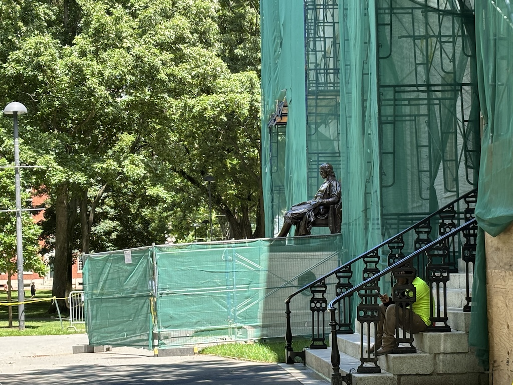
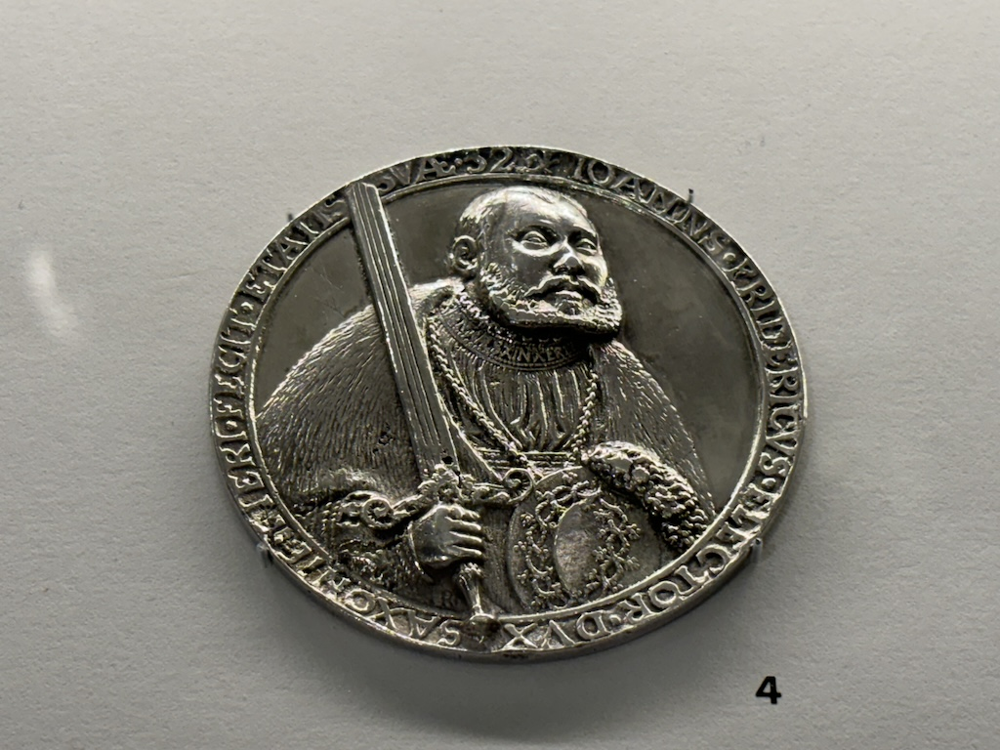
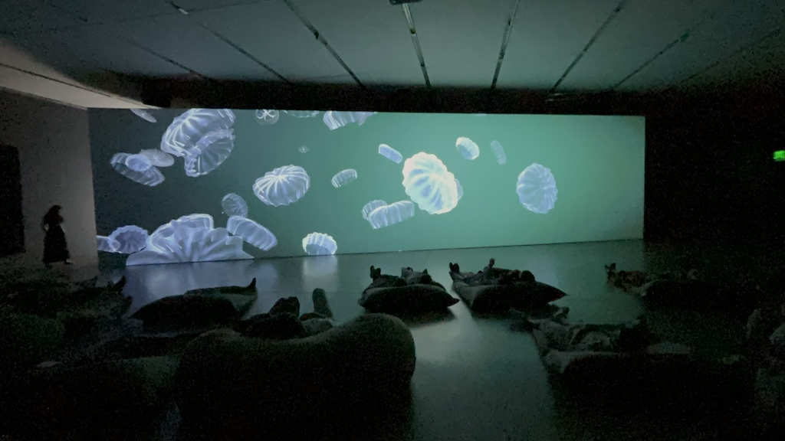

25th to 27th June 2024
Hello. This post is all about my time in Boston. For a reason I cannot remember I always thought Boston was quite a deprived area of America. In my head I expected a port city with an out of date docklands and lackluster industry. Oh how wrong I was. To those who don't know Boston is fancy. Flashy even.
Arriving late in the evening there was little to do except get some dinner and head to bed. After parking the car my sister and I walk a very short distance to the hostel. We're talking less than 1 mile between where we left the car and the front door. Yet when we arrived we were both soaked (being British we of course had raincoats, but our bags, legs and feet were all wet). For the rest of our stay we didn't see a downpour like this. I've noticed that unlike in the UK where rain is common but typically just "miserable" and hangs around whereas in America rain feels like flash flooding every time. We grabbed some Thai dinner around the corner and headed to bed.
The next day was our one and only day in Boston and we did a lot. I'm fairly certain my Garmin watch clocked 30000 steps. We headed for the harbour and the financial district as all the big corporate buildings pretty much are the harbour as well. I snapped this photo of commuters coming out of South Station at 08:55. I think it gives a good representation of the architecture and feel of the very center of Boston. Corporate and grey with a mixture of older smaller constructions. Unlike New York however it was exceptionally clean.

I'd say the river is narrower than the Thames around this part of town, but not by much. It doesn't look too polluted but knowing western cities well I'm going to assume it still is and is just very well disguised. Nonetheless this part of town is nice. The building halfway along the bridge in the image below is a museum on the Boston Tea Party. They have a replica (I assume) ship from the event when all that tea was wasted. Regardless of the politics and meaning of that day I have to say that amount of tea loss is saddening to me. I wonder if it was a hot day, the smell of Earl Grey may have been in the air.
We wondered along the walkways next to the river for a bit and then returned to the center. Quincy Market was next, which has this Athens looking entranceway. It is named after the mayor Josiah Quincy who was mayor in 1823.

The surrounding buildings are the ones selling souvenirs now with this central structure being exclusively a food market. Inside was one long walkway with food venders on each side. Plenty of places selling Clam Chowder, Lobster and other seafood. But other foods were also served like mediterranean and italian. Halfway down is this beautiful sky light with a quote noting it as the central market of the city.
At this point we headed back to the hostel as we had signed up to one of the free tours they offer. The place may have been one of the most expensive hostels I have stayed in, but the free events they ran were unrivalled by anything I've experienced in a hostel. A local lady now retired turned up and took my sister, myself and 3 others on a private tour of the Harvard Art Museum. Another thing that may have contributed to my low expectations of Boston; I didn't realise Harvard was here. MIT too (which considering the M stands for Massachusetts makes a lot of sense). Both reside in the north west region of Cambridge, just over the river.
Harvard is nice. Like if Cambridge in the UK was nestled in the center of Bristol, but it's still all flat. Also unlike the UK it was gorgeous weather here, making this photo I took look like one from a university panphlet. Good job iPhone on this one.

The picture below is of the Bronze John Harvard statue. Apparently it's very popular to rub his shoe for good luck, which if you're studying at a top university in the USA for 50000 dollars a year is probably a good idea. However on this day we weren't able to do so due to some rude scaffolders fencing it off, considering our safety more important than our chance for good luck. To be fair a brick or slate supposedly could have hit us if we got that close, but surely John's luck would have protected any visitors, right? Maybe the work was to add more luck to his foot. Who knows.
Ironically our tour at this point guide did get us lost as security had locked one of the gates we needed to get through. Lucking after explaining we were heading to the museum a nice man who was part of said security did let us through. For anyone curious this museum is completely free. On entering we saw this nice installation above which looked like a triangle player's dream instrument. In all seriousness though it was very pretty and especially impressive as it hung entirely from 1 wire and would slowly twist and sway overhead into lots of different shapes.

Now this museum was full of great art. I've missed a lot of great pieces in this post. However I will be mentioning what I enjoyed the most here. And by far that was the Scholars stones. I didn't even know this was something people enjoyed. A Scholars stone is literally just a display stone. Buy or find an interesting rock, carve a lovely wooden base for it, put it on your desk. I believe it traditionally comes from China and is referred to as Gongshi (供石).
This one was my favourite. The shape and colours are beautiful, as is the base. After looking at it for a while I thought this would be the sort of thing I'd enjoy on my desk. Not this one though; Not only was it 5 figures in cost but it would use up the entirety of an office desk by itself. Still, very pretty.

The exhibit also had a section on silverware from different periods. The cups plates and bowls were all very pretty but I personally think the much smaller yet still very highly detailed medals were the most impressive. This is Reinhard John the Magnanimous, Prince Elector of Saxony. There was no other information on the plaque about this medal so that's as much as I know about it. Regardless of it's age I thought it was pretty piece of metalwork.
Arguably the most famous art they had here are these 2 paintings. One by Van Gogh who I and I imagine everyone reading this knows. One by Matisse who I imagine everyone reading this knows but I didn't. My sister pointed it out and told me he influenced modern art heavily. To be fair they are pretty good apples.

At this point my sister and I split up for individual walks. She wanted to see more of the art and didn't fancy much more walking. I wanted to climb up to Beacon Hill, the oldest part of town. Here's a photo of the average street on the hill. In short, exceedingly fancy.

I'm a big fan of independent book shops. I believe it's one of the only places you can go and meet exclusively nice people. Pretty much all book shops have very pleasant interiors too. This one, simply called "Beacon Hill Books & Cafe", is beautiful. Not to mention in the kids section on the top floor there was a model train layout suspended from the ceiling. I probably enjoyed that part of the store a bit too much for a 24 year old.
Heading back to the hostel to meet back up for dinner I walked through the central park of Boston Common. They have a big pond in the center called the Frog Pond which is shallow enough that kids can run around in it. Every parent seemed fine with their kids getting soaked as here it takes about 10 minutes to dry off in the summer. Can't say I've seen that at home.

The play park next door is also very cute, named the Tadpole Playground. I took a photo fo the entrance to share the great sculptures of the frogs sitting on and around it. Definitely one of the nicer playgrounds I've seen.

Reunited my sister and I headed out for dinner. After looking up a couple of different options for seafood (which Boston is well known for) we settled for The Barking Crab. We queued for about 15 minutes and got a seat right by the water that lots of other groups in the queue turned down. It seemed it was too hot a spot for most people, so we jumped on the opportunity for the nice view of the city. For those curious, it was fine. We got Clam Chowder and Lobster sandwiches with slaw and chips. My first lobster ever and it was good! Although I was surprised for something so famous how subtle the flavour was.

Final activity of the day we went down to the Institute for Contemporary Arts, or ICA. The building is really unique with this huge hangover looking into the bay. Inside on the top floor (I think the other floors may be offices but don't quote me on that) the space is split into 2 halves for 2 different exhibits. A walkway runs along the harbour side glass wall connecting the two (which you can see people walking in the picture below).

This was a piece I thought was pretty cool. The artist had taken lots of old schematic diagrams, printed them on large canvas and then painted over them in creative ways. I should have written down who did this part of the exhibit, if anyone knows let me know.

In the other half the main piece was the room you can see below. Initially I thought it was a video feed and perhaps it looped every hour or so. In reality the screen was showing a game made in unity, rendering randomly spawning expressionist sea life. A relaxing melody that I believe was also randomly composed was also playing. Very cool, and the bean bags were a nice touch too.
And that was that, after enjoying this harbourside sunset at the ICA my sister and I headed back to the hostel and went to bed. A bit expensive but great time.

We next drove to Plymouth and Cape Cod - click here to read all about it! Otherwise return home.